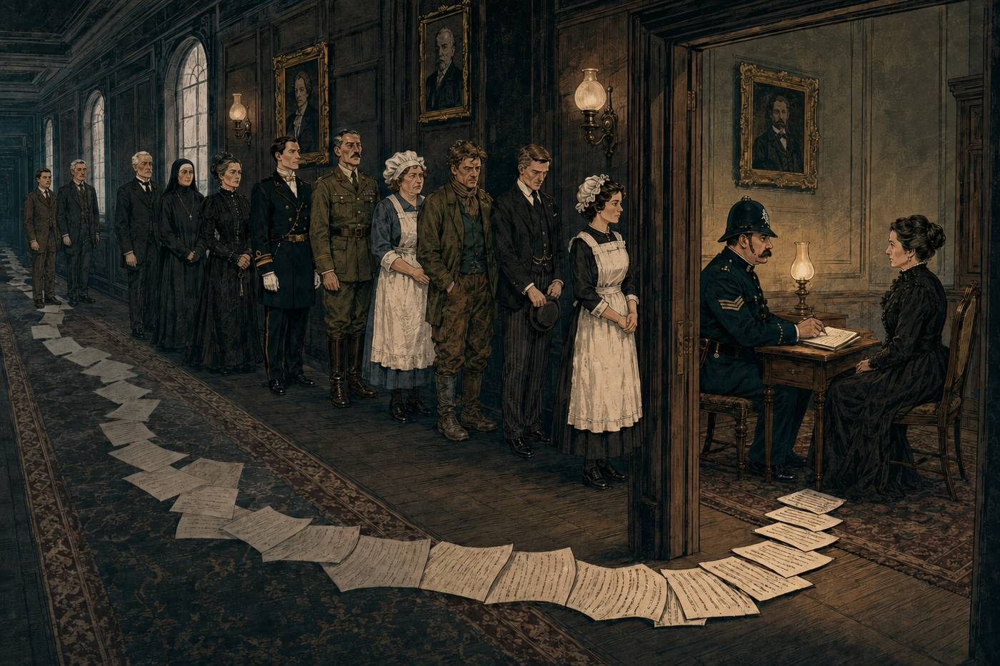
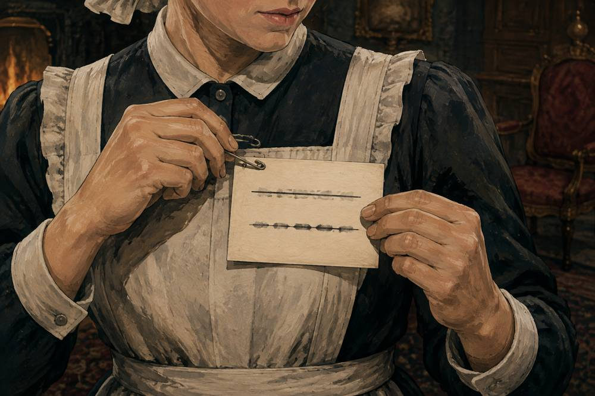
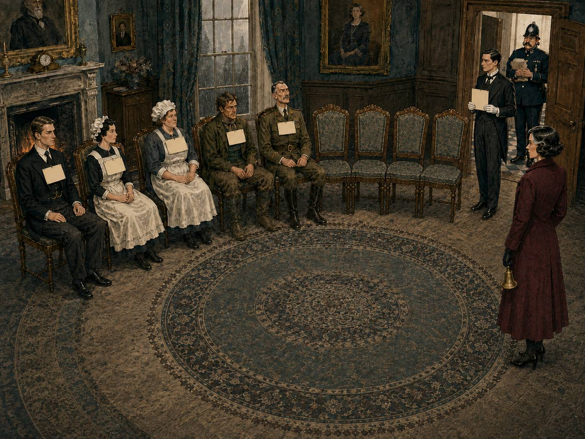
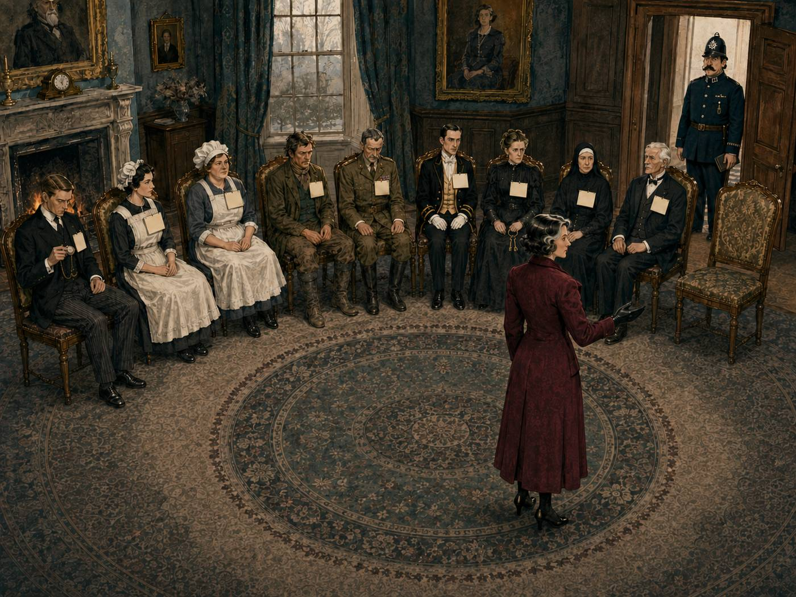

Solve the murder and you will know how artificial minds learned to think and understand our world. A plain-language guide to the transformer, the architecture they are built on.
This is a murder mystery, and it is fair: every fact needed to name the killer is in the story. It is also a working model of the machine behind ChatGPT. Read the story first. When it ends, the costumes come off and each part of it is matched to the part of the machine it stands for.
The people in this story
A clockmaker is dead, and his own clock stopped at twenty past eight
On the night of the first snow, Aldous Finch was found dead in his study at Harrow Manor, with a smashed carriage clock on the rug beside him. He had made that clock himself, and sold clocks like it for a great deal of money. People disliked him quietly, the way people dislike the rich.
The carriage clock had stopped at twenty past eight. It kept true time, which was more than could be said for the hall clock downstairs. The study had its own door onto the lawn, a minute's walk round from the dining room.
Nine people were in the house that night. Each of them knew one thing, and not one of those things accused anybody. Laid side by side in the right order, they name the killer.
Plodd had every fact in the case and no case at all
Constable Plodd was thorough. He was also alone, with nine people to question, so he did what a policeman does. He stood in the corridor and had them in one by one.
The valet came first and mentioned the hall clock. Plodd wrote it down. Four witnesses later Ellen said nine o'clock, and Plodd wrote nine o'clock, because by then the hall clock was eleven pages back in his notebook. He could have turned back. Plodd did not turn back eleven pages for a maid. The footman said the Colonel came down late. Late compared with what? Plodd did not ask. The Colonel had not been interviewed yet, and would not be for another hour. When the Colonel finally said he had been at dinner from eight, Plodd believed him, because the man had a medal and a way of standing.
By midnight Plodd had written down every fact in the case and could not see the killer in any of them. The valet's clock and Ellen's nine o'clock would have solved it together, and Plodd never held both in his head at the same time. He suspected the valet, who was about to be dismissed and bitter about it, and he had the sense not to say so out loud. At two in the morning he wired the county for help, with the answer already written in his own notebook, in the wrong order.

Verity's rule: read the room before you write, then say nothing more
Inspector Verity arrived on the morning train with a box of blank placards, and had a row of chairs set along one wall of the salon, with one chair spare at the end.
Her instruction was short. Each witness would come in alone and read every placard already worn in the room. Then they would write their one true thing on a placard, as it now stood in the light of what they had read. Read the room twice before you write, she added. The first time tells you what to look for. The second time you find it. Then pin it on, sit down, and say nothing more. Plodd's witnesses had spoken to Plodd alone; Verity's would read every answer given before theirs. Once a witness sat, they were finished, and no placard was ever changed.
The valet went first and read an empty room, which he did with some care, since Plodd was watching him from the door. He wrote:
Then Ellen. In the corridor the night before she had said nine o'clock and meant it. Here she read the valet's placard and went slightly pale. The hall clock says nine when it is really twenty past eight, because it runs forty minutes ahead. She wrote nine o'clock, struck it through, and wrote twenty past eight. Her placard read:
She sat down beside the valet and did not say another word. Nobody in the room said it out loud, but the clock beside the body had stopped at twenty past eight too.

Drag the row sideways to see every chair.
The cook came third and wrote what she knew:
The gardener had seen a tall figure cross the lawn. The cook's placard said there was only one tall man in the house, so the figure had a name. So the gardener wrote:
That cleared the valet Plodd had suspected. The figure on the lawn was tall, and the valet was not.
The Colonel came in fifth. He read the row and took a long moment over the gardener's placard. It put him on the lawn, and he could not take it down. He could not tell a new story either, since the old one was already in Plodd's notebook. So he wrote exactly what he had told Plodd:
Nobody in the room could contradict him, so nobody did. The footman was still waiting outside the door.
The first read told the footman what to look for. The second read found it.
The footman was sixth. He came in with one blunt fact and no idea what it was worth.

He read the five placards. The first read gave him one thing. The Colonel's placard said he was at dinner from eight, and the footman had served the soup, and the Colonel's chair had been empty for it. So the Colonel's story and the footman's memory did not match. But an empty chair only means something if you know the exact minute of the murder, and the footman did not.
So he read the row again, and this time he knew what he was hunting. The second read found Ellen: twenty past eight, the argument in the study. He could not have found that on the first read, because on the first read he had no reason to care what Ellen had heard.
He wrote:
Then he pinned it on and sat down. The Colonel, four chairs away, could not take his own placard back.
Drag the row sideways to see every chair.
The last witness to sit down was the only one who had read everything
The housekeeper came seventh and wrote:
Miss Finch, the dead man's sister, read that and wrote:
The room now had a reason. It had a nephew, and nobody in it who knew the nephew's name.
The butler came last. He walked in knowing one thing that nobody had asked him in thirty years, and he read eight placards. A clock that lies by forty minutes. An argument at twenty past eight, the minute the clock beside the body stopped. The only tall man in the house, at the study's garden door. A man who said he was at the table and was not. A will signed on Tuesday, and a nephew cut out of it.
He wrote:
He pinned it on and took the ninth chair.
Verity asked him one question, the only question she asked anyone all morning.
"Then who killed Aldous Finch?"
"The Colonel," said the butler. Verity wrote the name on a fresh placard and set it on the empty chair at the end of the row.
Drag the row sideways to see every chair.
